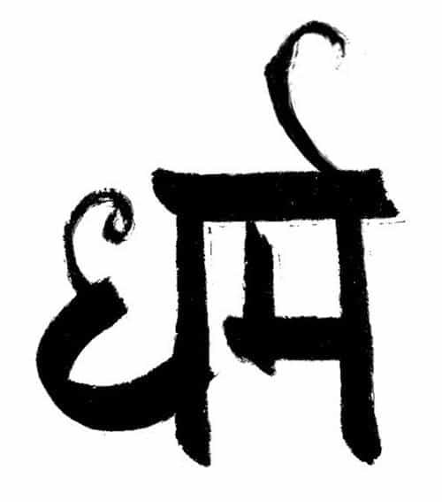
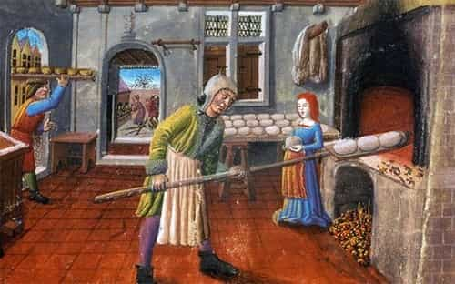

André is a young European who left his decaying country in 2012 for greener pastures. He enjoys exploring subterranean places, reading about a host of interconnected topics, and yearns for Tradition.


History of ideas is barely the kind of field that pays big bucks, but as long as it is not approached through an excessively biased perspective, one stands good chances to find hidden gems there. By exposing oneself to various schools of thinking, or reading important essays written long ago, one meets with possibilities that couldn’t be imagined or understood from today’s literature.
The idea of dharma struck me after I met with it both in history and today. First, it plays an important role in the views of two of the most important thinkers of the twentieth century, René Guénon and Julius Evola. Both aimed at expressing what they called the Primordial Tradition, purported source of all religions, and both considered the concept of dharma as referring to something immensely important to social life.
Second, the dharma was briefly, but not unimportantly, alluded to by an unexpected sympathizer of the red pill. A long-time “antifascist skinhead hunter” of Asian descent, who went by the name “Original Gangster Kim”, switched sides in 2014 by joining the Third Position movement Égalité & Réconciliation. Asked about the System’s push for gay marriage, Kim answered:
A man and a woman get together and have a baby. That’s it. That’s nature. Now, why insisting on adoption? Why should gay couples be allowed to adopt children? Such a thing is anomalous, or, as my culture would say, adharmic… That isn’t dharmic, that isn’t normal. (Here, 25:15)
Though bottle-fed “antifascism” and gangsta-rap, Kim also undertook the study of his ancestors’ traditions. These widely different pieces of culture must have forced him into a state of cognitive dissonance he was strong enough to break on top. Then, when facing the redefinition of marriage, the industrialization of child-making and rearing, the public encouragement to open homosexuality, he didn’t accept it but recoiled in horror. Needless to say, he got a lot of heat from his (now ex) “friends” from the so-called antifascist movement.
He did this because he gained a sense of dharma. My aim here is to provide the reader with a sense of it as well.

The thinking from ancient civilizations stands out as highly synthetic and dense. Greek authors such as Hesiod or Heraclitus were able to encapsulate complex, sometimes esoteric ideas into fragmentary sentences or rather small poems. Philosophy, as we understand it now, only came later through Socrates et al. as the analytical breakdown of what had been intuitively understood but was starting to darken.
The concept of dharma is exactly like that. It is so dense, so loaded with intrinsically related but different meanings, that it doesn’t have any exact translation in contemporary Western languages.
According to René Guénon, the word “dharma” can be more or less translated—depending on the precise use of the word—by “law”, “order”, “justice”, “harmony” or “nature.” It stems from the Sanskrit root dhri which refers to “supporting, holding, maintaining.” In the widest sense, dharma is “a principle of conservation of lively beings, and hereafter of stability”, related to higher, non-perceivable, planes of being; it is “what makes the becoming of the world more than perpetual change.”
This idea can be applied to any being, group of beings, era, and even to the whole universe at a particular moment. It becomes relevant when specifically applied to human individuals, types, countries and so on. Then…
one can speak of the proper Dharma of a particular being (called Swadharma) or group, such as a human collective… The word “justice” is sometimes a convenient translation of Dharma in the sense that, here, justice is a human expression of harmony and equilibrium, that is, an aspect of the conservation of cosmic stability. The word “virtue” can be used as well in the sense that someone’s actions are in line with his own nature.
The basic idea is that everyone has his or her own vocation, own destiny, and one’s proper destiny is actually integrated into a wider order whose respect is synonymous with what ought to be.
Of course, the very idea that someone’s dharma can be very different from his neighbour’s clashes with the “progressive” view that perceives individuals as “equal”, i.e. identical and interchangeable. People were born different, hence unequal. Everyone has a finite set of roles to play according to his or her own nature. Fulfilling your proper function and vocation means both thriving and living as you ought to.

What matters, then, is having individuals whose vocations can be clearly identified. Each one should be able to develop his dharma, in accordance, of course, with the wider dharma of one’s society, and no one should either have his dharma trampled by concurrence or lack of social clarity, nor rejected according to one’s whims. Then, it makes sense to both identify the individuals’ particular nature and support differentiated reproduction so that different groups and functions don’t mix confusingly.
Through dharma the traditional world, just like every living thing and every being, is upheld; the dams holding back the sea of pure contingency and temporality stand firm; living beings partake of stability. It is therefore clear why leaving one’s caste and mixing castes or even the rights, the duties, the morality, and the cults of each caste was considered a sacrilege that destroys the efficacy of every rite and leads those who are guilty of it to “hell”… nobody felt humiliated by his own caste and even a Sudra was as proud of and as committed to his own caste as a Brahman of the highest station… The ancient German peasant, for instance, experienced his cultivating the land as a title of nobility. (Julius Evola, Revolt against the Modern World, part 1, chap.14)
At a time where being a farmer is almost automatically derided upon as backward, “uneducated”, far from the “vibrant” cosmopolitan cities, a perspective which re-establishes the merit of toiling the land—or performing other tradesman work—, not only as useful and necessary, but also as endowed with a proper moral value and spiritual significance, should be esteemed worthy of interest.
In the world of Tradition, casts and guilds exist naturally as to “put the right man at the right place” and as to preserve each one’s place from prevarication, confusion, or from the flows of concurrence and speculation. The world of Tradition is definitely not socialist: its social order is hierarchic, it admits empires but no bloated bureaucratic State. It admits trade and capitalism completed by morality. The third caste, called Vaisya in India and Tiers état in the European Middle Ages, is made of free men, who know their trade, own their tools, are free to contract, buy, and sell, as long as they don’t try to outmaneuver or enslave each other.
Think of it this way: do you prefer living under the so-called rights of man, spending 8+ hours a day in a cubicle, trying to please the HR and making money for greedy bosses and shadowy shareholders, completely dependent from your wage, or wouldn’t it be better to do a trade you love, master your own tools and contracts, belong to a guild with a special dignity and privileges, and be the king of your home?
It could be objected that classical liberalism, the ideological hotbed of what was later dubbed capitalism, aimed at protecting the people from the abuses of absolute monarchy. This is what we’re taught in academia, but this view entails a considerable twist of history. In truth, for thousands of years, kings and nobles were endowed with major responsibilities: they had to fix the prices so that no one could ruthlessly speculate at the expense of his neighbour, they rendered justice inside their own jurisdiction, and if they did their job right, they had even less power than a modern State.
Problems came when kings, instead of accepting their proper role, started cunning against the church and robbing the nobles of their power with the help of the nascent bourgeoisie. Ultimately, these degenerated monarchies, who denied the priests’ and nobles’ respective dharmas out of hubris, got overthrown, and we mistake them for monarchy in general, forgetting the countless times and places when proper cast societies worked and lasted.
The notion of dharma, that is, someone’s proper vocation, nature and destiny within a wider order, fits nicely with something we spent much time talking about: women. Progressives try to push for a purely abstract view of individuals, as if individuals had no proper features, innate abilities, character, biological impulses, and so on. Feminism follows this trend by denying how biology makes people, trying to cast womanhood and femininity as pure “social constructions.” What they’re doing consists in rejecting their own womanly dharma—and trying to grab some victimhood points in the process.
Are the women who reject femininity happy? Perhaps they manage to take advantage of their inflated SMV to collect beta orbiters, benefit from “affirmative action”, get invited to every party, and derive an immense pride from their effortless seduction power. But even then, by refusing to commit to a man and to have children, these women are not listening to their own deep-wired desires. At the end, they may manage to settle down with beta males, yet remain bored and constantly frustrated—or become cat ladies.
Traditional women, on the other hand, are much happier. A woman who enjoys and takes pride from pleasing her husband and caring about children and home is happy. What she’s doing is in line with her deepest needs. The womanly woman fulfills her destiny. Those who believe they are better off with a life of diversions and working for GloboCorp are blinded by a false view of dignity (as if being a proper woman meant having no dignity or pride) and out of touch with their own needs.
It is a classical idea that perfection cannot be defined by any materialistic criteria, but only as the accomplishment of one’s own nature… The trend towards indifferentiation, towards fleeing mobility, leads the affected thing or being into a state of self-incompleteness, makes it lack correspondence to its own norm or “idea”, or, more precisely, to its dharma. (Evola, Revolt against the Modern World, I, 14)
The traditional Christian world modelled its economy on the idea of subsistence: anyone bound to free trade or production, i.e. belonging to the caste of merchants, craftsmen and free farmers, had to have his own place somewhere so that he could subsist and fulfill his dharma. He was, then, protected from his neighbour’s greed and potential violence by the nobility or king. He might be a poor vaisya, but was no less the chief of his business and family.
One of the main factors that have upset this order, besides the degeneration of monarchies, could be find in a peculiar community: Jews. It has been shown that Jewish merchants often lessened their prices, used underhanded techniques such as selling used stuff as if it was new, and even pioneered advertisement—at a time when it was considered as encroaching on other people’s businesses. Sustained Jewish efforts greatly contributed to push the Western world towards “freer” and “freer” market relationships, that is, towards a world where the most cunning asserts his interest at the expense of the others’ legitimate ones.
If one follows purely economic considerations, one should soon fine that resources are always limited and that one’s narrowly individual economic interest always entails screwing someone else. Producers are interested into stable conditions, so that they can work stress-free and assured to sell their products, whereas merchants earn significantly more when they can squeeze the producers before selling their products at a high price. Economic interests alone lead to endless disputes.
Likewise, if one believes too much into the “equality”—identity—of individuals and daydreams about “progress” or “emancipation”, one’s mindset will bear impossible hopes and deluded aspirations. When the impossibility of said hopes or how much they imply the ruthless exploitation of someone else—for example, how the businesswoman’s comfort lies on pushing men down the sewers of silence and cheap employment—, here comes the existential crisis.
Both problems stem from the same root: the refusal to acknowledge limits to one’s rights and duties. No one can do everything and no one should ever want to. Women should want to be feminine and not to be masculine, just like men should pursue masculinity and refuse to indulge into feminization.
Read Next: Why Men Must Become Aristocrats Of The Soul